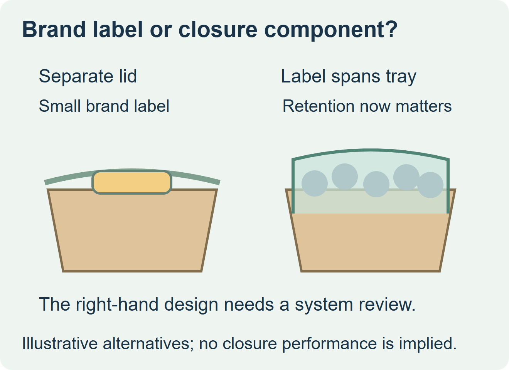
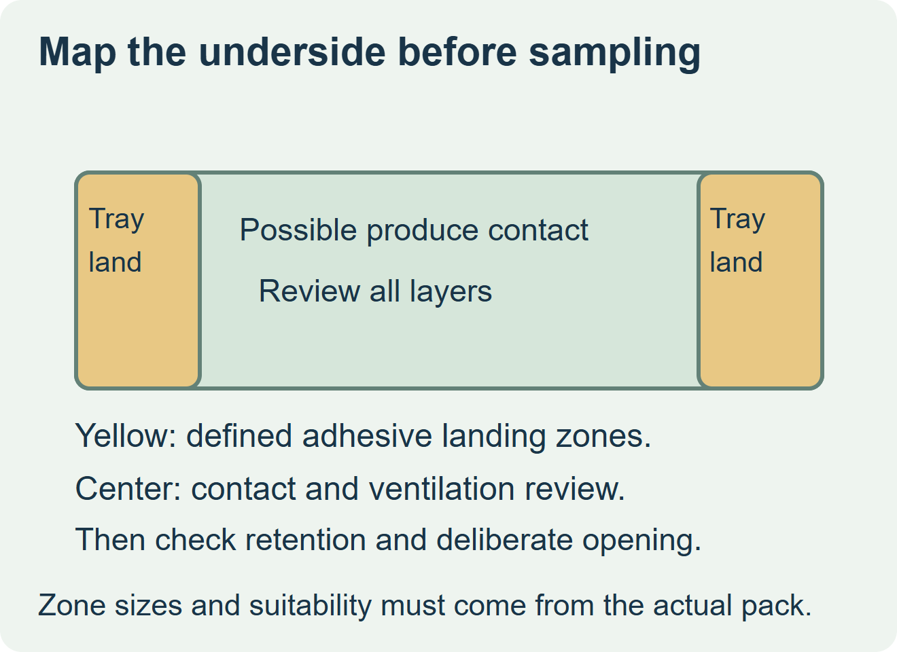

Keep the separate lid when the current package needs functions the proposed label closure has not been shown to provide. Consider a purpose-designed over-top label when the packaging owner accepts that closure route and a complete filled-pack trial demonstrates retention, suitable contact zones, ventilation and usable opening. An ordinary printed sticker is not automatically a substitute for a lid.


Name the job currently done by the lid
List what the pack needs: retaining loose produce, providing an appropriate product environment, protecting the display surface, surviving stacking and handling, and allowing the customer to open it. Establish which functions belong to the tray, closure, outer case or another component. A larger branding area does not answer whether the replacement performs those jobs.
MULTIVAC’s February 2024 TopCLOSE example concerns produce that does not require modified-atmosphere or airtight vacuum packaging. It describes a specially manufactured label with adhesive-free areas, and shows a berry tray with a viewing window and cut-outs. Those details identify a specialized packaging system. Its contact suitability and performance cannot be transferred to a different converter’s construction. MULTIVAC’s produce-tray closure example
| What the pack requires | Buying direction | Evidence needed before substitution |
|---|---|---|
| An established barrier or atmosphere-control function | Keep the approved closure until a replacement system is qualified | Packaging owner’s assessment of the complete proposed system |
| Retention on an open produce tray using an accepted label-closure route | Ask for a purpose-designed closure construction | Filled-tray retention, contact-zone, ventilation and opening assessment |
| Only branding on an existing functional lid | Buy an exterior brand label | Lid fit, vent clearance, print and adhesion; no lid replacement |


Draw adhesive lands and possible food contact
Mark the tray rim and sidewall areas that can receive adhesive. Also mark where produce can touch the underside of the spanning section as fill height varies or the pack is handled. An adhesive-free center is a design feature to specify; it does not by itself prove that the face material, printing, coating or the entire system is suitable for contact. Request the applicable evidence for the proposed materials and intended market through the packaging owner.
Measure the real tray with its coating and assembled corners. The edge that gives a label a secure landing on one tray may be narrower or rougher on another. Keep ventilation openings and the required view of the produce in the drawing. Do not copy a competitor’s cut-out area or assume that a transparent face provides a particular product environment or shelf life.
Test the filled pack and the intended opening
Have the packhouse define representative fill levels, produce variation, packing conditions and the actual handling route. Check attachment at each landing, lifting or sagging of the spanning area, produce escape, rubbing against the closure, and the customer’s opening action. Include the outer case and stacked presentation where they affect the closure. Agree acceptance before testing rather than treating any attractive prototype as a pass.
For a hypothetical berry tray, a low-fill display mockup leaves the middle of the label above the fruit. At the intended upper fill condition, the berries may contact that section. That changes the evidence needed for the construction even if both photographs look acceptable. If contact or retention remains unresolved, retain the existing approved lid while the proposed design is assessed.
Quote the package change, not just a larger label
Ask separately about the tray interface, closure construction, application method, sample route and quantities by artwork. Confirm which supplier is responsible for each component and who assesses the assembled package. A different closure can affect machine presentation and case packing as well as label cost. ZFU’s standard food-label scope does not establish availability of a structural closure label; submit the actual requirement for project review before treating it as an available product.
Discuss the unresolved label requirement
Send filled tray samples and dimensions, tray coating, produce and fill variation, current closure function, proposed contact and adhesive zones, packing and cold-handling route, intended opening and quantities. Review food label options and prepare a label specification inquiry. The contact page opens an email draft and lists email or WhatsApp for attachments. Supply, proof options, testing, pricing and timing require project confirmation.